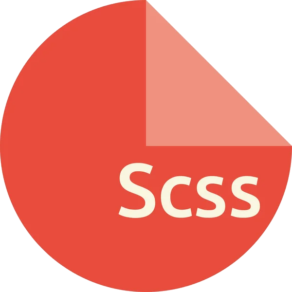
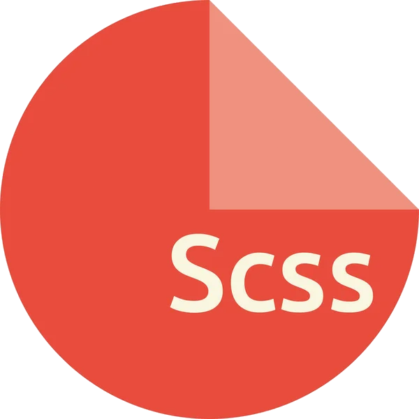

Lenguajes de programación para el desarrollo web front-end

 

Con HTML, he aprendido a crear la estructura y el contenido de las páginas web. He aprendido a definir los diferentes elementos de una página, como encabezados, párrafos, imágenes, enlaces, formularios y otros elementos que se utilizan comúnmente en una página web. También he aprendido a utilizar etiquetas y atributos de HTML para estructurar y organizar el contenido de la página. Con CSS, he aprendido a dar estilo y diseño a las páginas web. He aprendido a definir la apariencia visual de los elementos de una página, como los colores, las fuentes, los tamaños, los márgenes, los diseños y otros. Además, he aprendido a utilizar CSS para hacer que las páginas se vean más atractivas y profesionales. Con JavaScript, he aprendido a hacer las páginas web más dinámicas e interactivas. Con este lenguaje, puedo manejar eventos, crear efectos visuales, validar formularios y realizar otras funciones avanzadas que mejoran la experiencia del usuario en el sitio web. Finalmente, con SASS, he aprendido a simplificar mi trabajo en CSS. SASS me permite utilizar funciones y variables para definir estilos reutilizables, lo que me ahorra tiempo y esfuerzo en el proceso de diseño y desarrollo de la página web. En resumen, gracias a estos lenguajes de programación web, he logrado desarrollar sitios web con códigos limpios, optimizados y con un estilo moderno.
Lenguajes de programación para el desarrollo web back-end:


En mi experiencia, he aprendido mucho acerca de programación web, en particular con Node.js. Me ha enseñado cómo desplegar servidores, codificar asincrónicamente, estructurar mi código y manejar eventos en el lado del servidor. También he aprendido cómo utilizar JSON para codificar y decodificar datos, lo que me ha permitido compartir información entre diferentes lenguajes de programación. Además, Express ha sido una herramienta muy útil para facilitar la implementación de Node.js, lo que me ha permitido desplegar servidores y conectarme con bases de datos NoSQL como MongoDB. Finalmente, también tengo conocimiento en PHP, lo que me ha permitido crear inicio de sesiones mediante formularios, conectar a bases de datos y realizar operaciones CRUD como subir, editar y eliminar elementos. En resumen, a través de mi experiencia en programación web, he adquirido habilidades valiosas en diferentes herramientas y lenguajes que me permiten crear aplicaciones web dinámicas y efectivas.
Lenguajes de programación para el desarrollo de bases de datos:


Lenguajes de programación para el desarrollo de sistemas embebidos:


Durante mi experiencia como programador, he trabajado con varios lenguajes de programación, entre ellos C, C++, Python y Visual Basic. En cada uno de ellos, he aprendido las estructuras básicas de programación, como las condiciones, los bucles, las funciones, entre otras. En cuanto a los tipos de datos, he trabajado con enteros, flotantes, caracteres, cadenas de caracteres, booleanos, entre otros. Además, he aprendido sobre la semántica de cada uno de estos tipos de datos, cómo manipularlos y almacenarlos. Otro aspecto importante que he aprendido es la importación de bibliotecas y módulos en cada uno de estos lenguajes. En Python, por ejemplo, he utilizado bibliotecas como NumPy, Pandas y Matplotlib para el análisis de datos y la visualización. En C++, he utilizado la biblioteca STL para estructuras de datos y algoritmos. También he aprendido sobre los operadores lógicos y relacionales, que se utilizan para comparar valores y tomar decisiones en la programación. Además, he aprendido a crear y utilizar funciones, que son bloques de código que realizan una tarea específica y se pueden reutilizar en diferentes partes del programa. En resumen, mi experiencia en programación me ha permitido aprender muchas habilidades y conceptos en diferentes lenguajes de programación, incluyendo la manipulación de datos, el uso de estructuras de control de flujo y la creación y utilización de funciones.
En aprendizaje


Me interesó aprender TypeScript y React.js por las siguientes razones: mejorar mis habilidades en el desarrollo web, ya que son tecnologías muy populares y en demanda en el mercado laboral moderno; facilitar el mantenimiento y depuración de código, especialmente en proyectos grandes o complejos, gracias a que TypeScript agrega una capa de tipos de datos y React.js simplifica la construcción de interfaces de usuario; y aprovechar la gran comunidad de desarrolladores y abundantes recursos de aprendizaje en línea, como documentación oficial, tutoriales, videos y cursos en línea, lo que facilita el proceso de aprendizaje y brinda apoyo cuando lo necesito. En resumen, aprender TypeScript y React.js me permitiría mejorar mis habilidades de desarrollo web, hacer mi trabajo más fácil y eficiente, y unirme a una comunidad en línea próspera de desarrolladores.